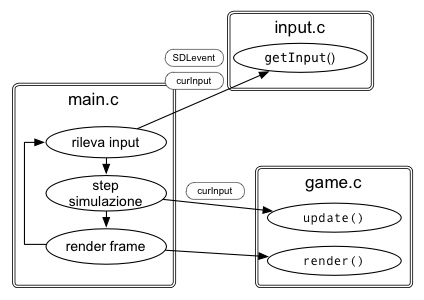
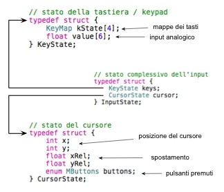

Come è già stato accennato, il rilevamento dell'input utente è realizzato per mezzo delle librerie SDL: nel primo dei tre step del loop di gioco, main.c rileva eventuali eventi SDL (SDL_Event) e li processa. Se si tratta di eventi di sua competenza si preoccupa di processarli, in ogni caso l'evento SDL viene sempre passato alla funzione getInput() di input.c per delegare a quest'ultimo il compito di rilevare l'input corrente e di riversarli nella struttura curInput. In questo modo main.c viene epurato dall'enorme quantità di codice ripetitivo che è necessario scrivere per gestire i comandi dell'utente. Terminata la prima fase del ciclo, curInput viene passato alla procedura di update di game.c e di conseguenza, agli eventuali elementi della scena che aggiornano il loro stato anche in funzione dei comandi del giocatore.
Si vuole inoltre che i componenti che andranno a leggere lo stato dell'input non debbano dipendere dalla libreria SDL ed è stata quindi predisposta una semplice struttura InputState che tiene traccia dell'input utente limitatamente alle necessità di questo progetto. Essa è composta da due strutture: la prima (KeyState) mantiene le informazioni relative ai tasti premuti (tastiera e/o gamepad) e la seconda (CursorState) contiene lo stato del cursore in maniera simile a quanto realizzato da SDL.
Il modo in cui viene gestito l'input è decisamente poco flessibile (i controlli sono profondamente cablati nel codice), questo porta però il vantaggio di poter realizzare con poco sforzo le funzionalità necessarie e senza grossi investimenti in termini di tempo.
L'imput utente è organizzato
per mappe di tasti: il tipo di dato KeyMap
è in realtà un alias per il tipo unsigned short e permette di
leggere fino a otto flag ( char = byte = 8 bit) corrispondenti ad
altrettanti tasti che possono essere premuti (flag 1) o rilasciati
(flag 0). Con questo sistema si può dividere l'intera tastiera in
“zone di interesse”, ciascuna limitata a otto pulsanti. Si
prevedono 4 mappe di tasti (da cui la dimensione del vettore kState):
una per gestire le frecce direzionali (KM_ARROWS), una per i
tasti invio ed enter (chiamati tasti di controllo: KM_CONTROL), una
per i comandi dell'elicottero (KM_COPTER) e un'ultima per controllare
la telecamera quando è in modalità libera (KM_CAMERA).
In realtà
è possibile assegnare più tasti allo stesso flag di una keymap
(infatti l'elicottero è controllabile con la tastiera e con il
tastierino numerico, oltre che col gamepad), pertanto è utile
pensare ad un flag come ad un'azione intrapresa dall'utente
indipendentemente dal tasto scelto per comandarla. Ad esempio il flag
FORWARD della keymap relativa all'elicottero indica che l'utente
vuole fare avanzare l'elicottero ma non impone uno specifico bottone.
È nella funzione getInput() di input.c che viene
realizzato (purtroppo staticamente) il mapping tra evento SDL
specifico e relativo flag di una keymap.
La gestione del gamepad si affida allo stesso principio e gli
eventi SDL relativi al controller vengono mappati verso i rispettivi
flag.
Per gestire adeguatamente i diversi controlli analogici
messi a disposizione, la struttura KeyState viene arricchita
da un vettore di sei valori (value) in virgola mobile (uno per
ogni controllo analogico utilizzato) che possono assumere valori tra
-1 e 1 per indicare la posizione di uno stick o di un trigger
relativamente al suo asse. Quando l'utente utilizza la tastiera, la
funzione getInput() si preoccupa di tradurre la pressione di
un tasto con il valore -1 o 1 all'interno dell'indice appropriato e
il rilascio del tasto con il valore 0. In questo modo le varie
procedure di aggiornamento degli elementi di scena non devono
distinguere tra input derivante da tastiera o da joystick.
NB: per la messa a punto del codice è stato utilizzato un gamepad Logitech del tutto simile ai controller “standard” adottati da Playstation3 e Xbox360. L'utilizzo di un diverso tipo di gamepad può portare ad una diversa numerazione degli indici usati da SDL per riconoscere i diversi bottoni e gli assi analogici. Se il proprio gamepad non risponde come indicato dalla guida al gioco, si consiglia di regolare manualmente il mapping dei bottoni e dei trigger modificando l'header input.h.